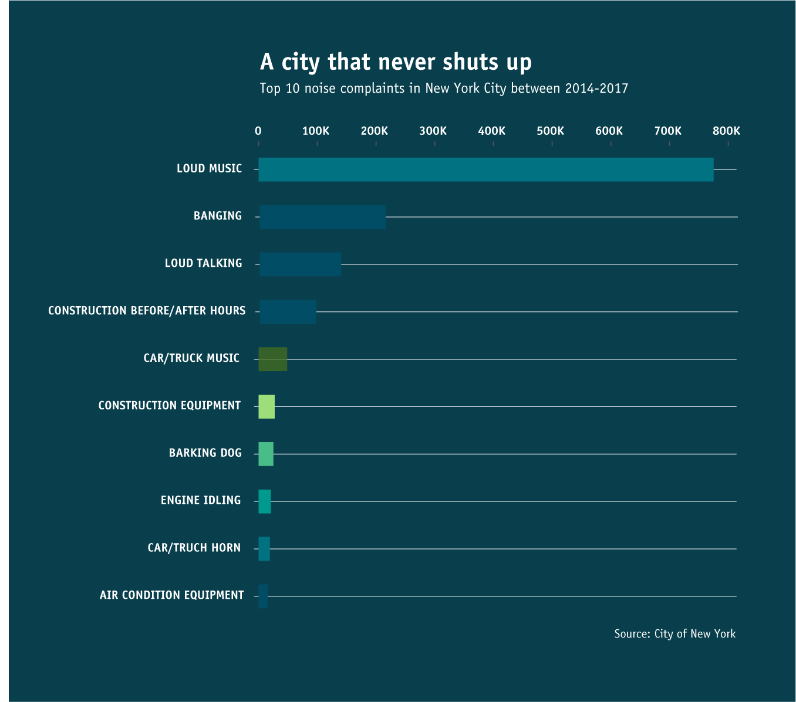
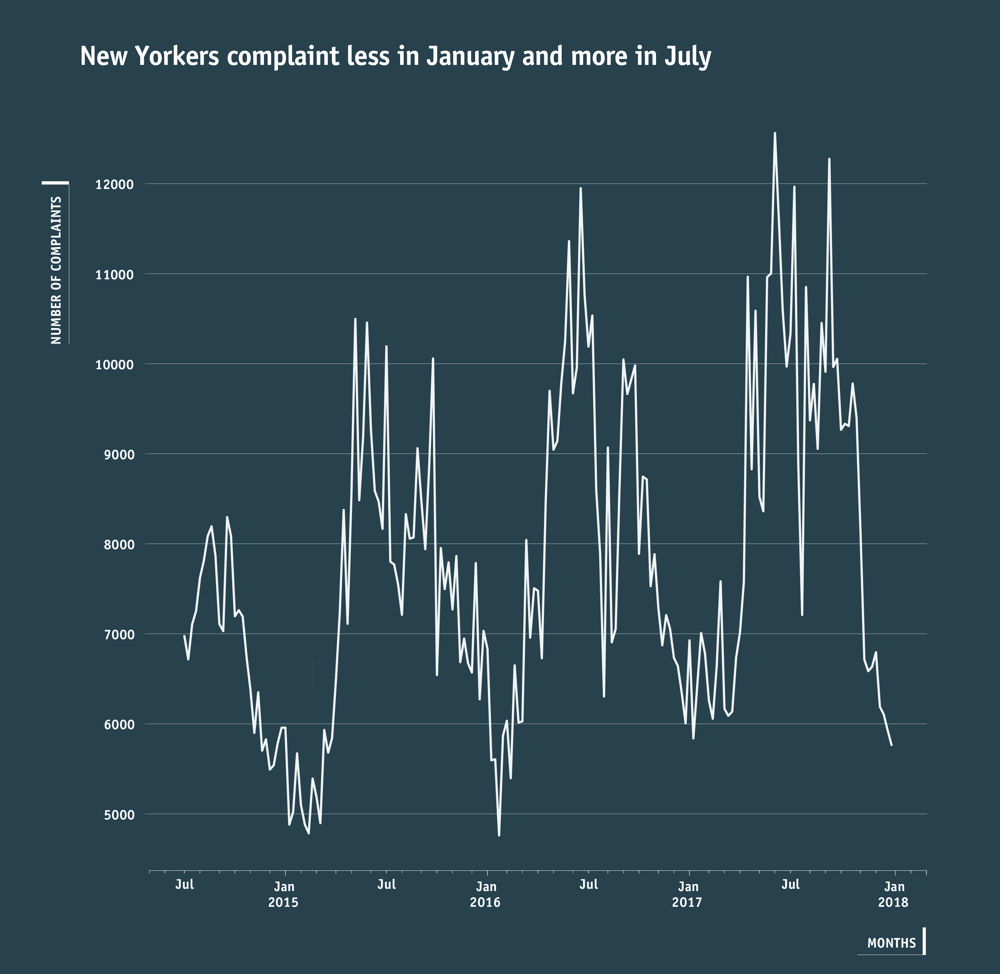
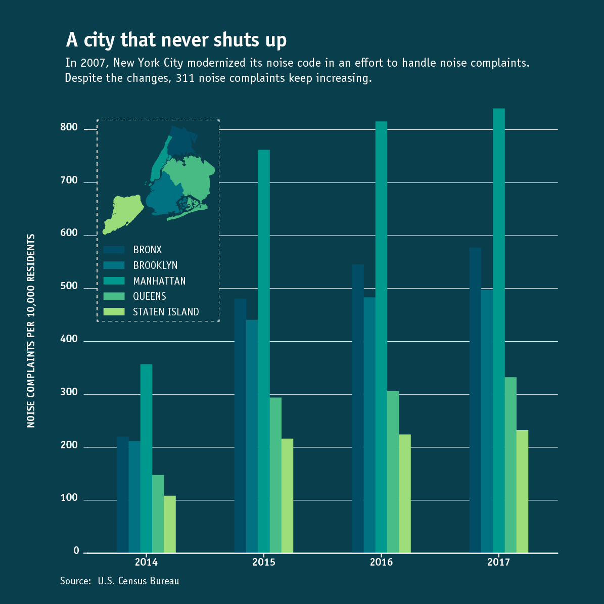

311 Complaints
BY Katerina Voutsina
Published July 20, 2018
A 2017 New York Times' article "New York Becomes the City That Never Shuts Up". It lists the different types of noise in the New York city area and explores the reasons behind the increase in 311 noise complaints. In this project I want to gain a foundational understanding of noise sources in all five boroughs from 2014 until 2017, based on the NYC 311 Call Dataset.
Why New Yorkers complaint
This project analyzed all noise complaints from 2014 to 2017 in all five boroughs. The chart below presents the ten most common complaints.
Summer months are noisier
Most complaints are recorded in the summer months, while January seems less noisy.
Location, Location, Location
In 2017, more than 139,000 noise complaints were recorded in Manhattan, up from 57,772 in 2014. The highest concentration of complaints was recorded in Midtown, Chelsea and Hell’s Kitchen, as well as the Lower East Side.
Noise complaints increased by 30%

It seems that noise has become an issue even in neighborhoods, such as the Upper East Side, Queens and Brooklyn. An increase in construction for example has increased complaints in neighborhoods that used to be more family-friendly and quiet. The biggest irritant, however, is loud music, loud talking and loud television.